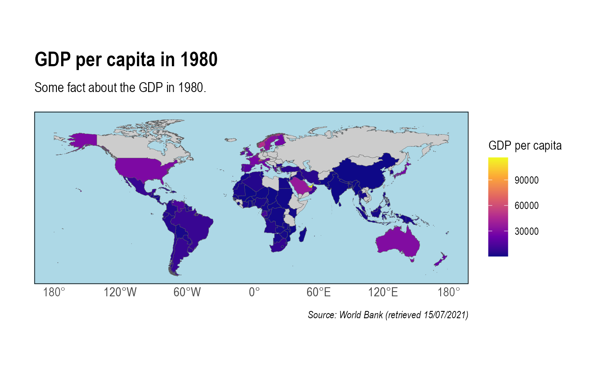

vignettes/CShapesMaps.Rmd
CShapesMaps.RmdProviding visualizations about of the structure of the international governance system at certain times is desirable, but not always straightforward. While not aiming at being a comprehensive guide to the different ways of creating maps in R, this articles introduces the process of building maps in R with data from {cshapes} package and GDP data from the World Bank.
In the following example, we’ll see how to build a heatmap showing GDP per capita in 1980.
{cshapes} and the World BankFirst, we extract data from the WDI package of the NY.GDP.PCAP.KD indicator of the World Bank which yields information about the GDP per capita of countries in 2010 $. We then clean this data and then convert the ISO country code to the COW number we have in the {cshapes} dataset with the countrycode package.
# Extract GDP from World Bank for the period between 1980 and 1990
library(WDI)
library(countrycode)
library(dplyr)
GDP <- WDI::WDI(indicator = 'NY.GDP.PCAP.KD', start = 1980, end = 1980)
GDP <- dplyr::slice(GDP, 50:266)
GDP <- dplyr::as_tibble(GDP) %>%
qData::transmutate(COW_Nr = as.character(countrycode::countrycode(GDP$iso2c,
origin = "iso2c",
destination = "cown",
warn = FALSE)))Second, we use the {cshapes} package by importing a world map in a way that is consistent with the qVerse with our import_cshapes() function.
# Import map data with import_cshapes()
mapdata <- qStates::import_cshapes(date = "1980-01-01")Finally, we perform a left_join() between both dataframes to combine mapping data (especially the geometry variable which contains the shapes of countries) and data about GDP in 1980. Since this is a historical map, it takes the information about states and distances according what they were in 1980 (e.g. West and East Germany or USSR).
# Left join on COW_Nr
data <- dplyr::left_join(mapdata, GDP, by = "COW_Nr")To plot the data, we leverage {ggplot} and its geom_sf() layer that takes a vector of polygons as an input (in this case the geometry variable of the combined dataframe) to create a map. We also use a neat theme from the hrbrthemes package and tweak it a little for a prettier output.
library(ggplot2)
library(hrbrthemes) # for a pretty map
ggplot2::ggplot(data = data$geometry) + # Main plot options
geom_sf(mapping = aes(fill = data$NY.GDP.PCAP.KD), lwd = 0.1) + # Map options
scale_fill_viridis_c(option = "plasma", na.value = "grey80") + # Color options
labs(title = "GDP per capita in 1980",
subtitle = "Some fact about the GDP in 1980.",
caption = "Source: World Bank (retrieved 15/07/2021)",
fill = "GDP per capita") + # Define labels
hrbrthemes::theme_ipsum() + # Set a default theme
theme(panel.background = element_rect(fill = "light blue"), # Make oceans blue
panel.grid.major = element_blank(),
panel.grid.minor = element_blank(),
panel.border = element_blank()) # Remove grids